| Name | Sagar Kumar |
|---|---|
| PRN | SOE25BTAM29 |
| Section | A |
| Program | Bachelor of Technology |
| Year | 2 |
| Semester | III |
| Course Code | U25AMILPC307 |
| Course Title | DBMS Lab |
| Practical | P1 |
| Experiment No. | P1 |
|---|---|
| Title | Database Creation and ER Modeling – Designing an ER diagram for a real-world case study and mapping it into a relational schema |
| Case Study | College Management System |
| Software Used | PostgreSQL 17 (server and psql client) |
To design an Entity–Relationship (ER) model for a College Management System, map the ER model into a relational schema, and create the corresponding database and tables in PostgreSQL 17 with appropriate primary key, foreign key and integrity constraints.
A college needs to store and manage information about its departments, students, faculty members, the courses offered, and the enrollment of students in those courses. Every student and every faculty member belongs to exactly one department, every course is taught by one faculty member, and a student may enroll in many courses while a course may have many students. For each enrollment, the date of enrollment and the marks obtained must be recorded.
Design an ER diagram that captures these requirements, convert it into a relational schema, and implement the schema as a PostgreSQL database named college_db.
The college is organised into departments (for example, Computer Science and Engineering, Artificial Intelligence and Machine Learning). Each department is identified by a department ID and has a unique name.
Students are admitted into a department. For every student the college records a student ID, name, e-mail address (unique for each student) and phone number. Faculty members are also attached to a single department and are identified by a faculty ID.
The college offers courses. Each course has a course ID, a name and a number of credits, and is assigned to one faculty member who teaches it; a faculty member may teach several courses.
Students register for courses. One student can take many courses and one course can be taken by many students, so this is a many-to-many association. Each registration is stored as an enrollment record holding the enrollment ID, the student, the course, the enrollment date and the marks scored (marks may be empty until the course is evaluated). A student cannot enroll in the same course twice.
| # | Entity | Description |
|---|---|---|
| 1 | Department | An academic department of the college. |
| 2 | Student | A student admitted to a department. |
| 3 | Faculty | A teaching staff member working in a department. |
| 4 | Course | A subject offered by the college and taught by a faculty member. |
| 5 | Enrollment | Associative entity that records a student's registration in a course (resolves the M:N relationship between Student and Course). |
| Entity | Attribute | Data Type (PostgreSQL) | Constraint / Description |
|---|---|---|---|
| Department | department_id | INT (identity) | Primary key, auto-generated |
| department_name | VARCHAR(100) | NOT NULL, UNIQUE | |
| Student | student_id | INT (identity) | Primary key, auto-generated |
| student_name | VARCHAR(100) | NOT NULL | |
| VARCHAR(120) | NOT NULL, UNIQUE | ||
| phone | VARCHAR(15) | Optional contact number | |
| department_id | INT | NOT NULL, foreign key → Department | |
| Faculty | faculty_id | INT (identity) | Primary key, auto-generated |
| faculty_name | VARCHAR(100) | NOT NULL | |
| department_id | INT | NOT NULL, foreign key → Department | |
| Course | course_id | INT (identity) | Primary key, auto-generated |
| course_name | VARCHAR(100) | NOT NULL | |
| credits | SMALLINT | NOT NULL, CHECK 1 to 6 | |
| faculty_id | INT | NOT NULL, foreign key → Faculty | |
| Enrollment | enrollment_id | INT (identity) | Primary key, auto-generated |
| student_id | INT | NOT NULL, foreign key → Student | |
| course_id | INT | NOT NULL, foreign key → Course | |
| enrollment_date | DATE | NOT NULL, DEFAULT CURRENT_DATE | |
| marks | NUMERIC(5,2) | Optional, CHECK 0 to 100 |
All attributes are simple and single-valued. The pair (student_id, course_id) in Enrollment is additionally declared UNIQUE so that a student cannot enroll in the same course twice.
| Table | Primary Key | Constraint Name | Reason |
|---|---|---|---|
| department | department_id | pk_department | Uniquely identifies each department. |
| student | student_id | pk_student | Uniquely identifies each student. |
| faculty | faculty_id | pk_faculty | Uniquely identifies each faculty member. |
| course | course_id | pk_course | Uniquely identifies each course. |
| enrollment | enrollment_id | pk_enrollment | Surrogate key for each enrollment; (student_id, course_id) is kept as an alternate (candidate) key using UNIQUE. |
| Table | Foreign Key | References | Constraint Name | On Delete |
|---|---|---|---|---|
| student | department_id | department(department_id) | fk_student_department | RESTRICT |
| faculty | department_id | department(department_id) | fk_faculty_department | RESTRICT |
| course | faculty_id | faculty(faculty_id) | fk_course_faculty | RESTRICT |
| enrollment | student_id | student(student_id) | fk_enrollment_student | CASCADE |
| enrollment | course_id | course(course_id) | fk_enrollment_course | CASCADE |
All foreign keys use ON UPDATE CASCADE. A department or faculty member that is still referenced cannot be deleted (RESTRICT), whereas deleting a student or a course automatically removes the related enrollment rows (CASCADE).
| Relationship | Entities | Cardinality | Meaning and Participation |
|---|---|---|---|
| Belongs_To | Department – Student | 1 : N | One department has many students; each student belongs to exactly one department. Student participation is total (department_id NOT NULL); Department participation is partial. |
| Works_In | Department – Faculty | 1 : N | One department has many faculty members; each faculty member works in exactly one department. Faculty participation is total. |
| Teaches | Faculty – Course | 1 : N | One faculty member teaches many courses; each course is taught by exactly one faculty member. Course participation is total. |
| Enrolls (via Enrollment) | Student – Course | M : N | A student enrolls in many courses and a course has many students. Implemented through the Enrollment table as two 1 : N relationships: Student 1 : N Enrollment and Course 1 : N Enrollment. Participation of both sides is partial. |
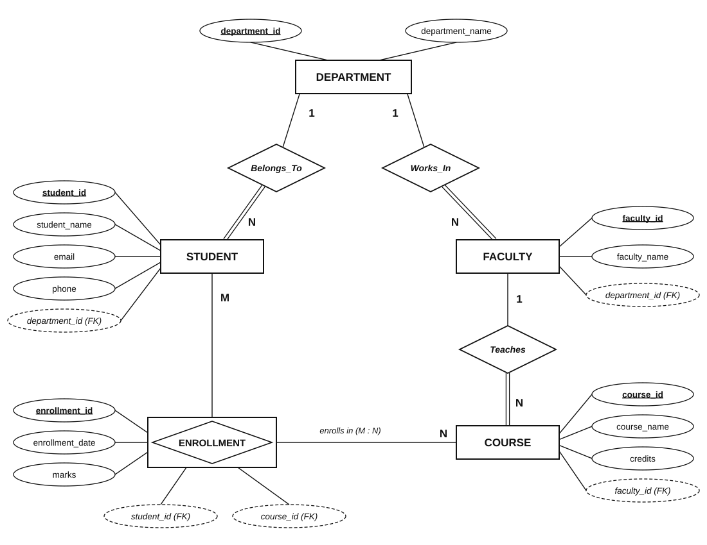
| Notation used in Figure 1 | |
|---|---|
| Rectangle | Entity |
| Rectangle enclosing a diamond | Associative entity (Enrollment, resolving Student M : N Course) |
| Diamond | Relationship |
| Ellipse with underlined name | Primary key attribute |
| Dashed ellipse marked (FK) | Foreign key attribute (shown to make the mapping explicit) |
| 1, N, M on a line | Cardinality of that side of the relationship |
| Double line | Total participation of the entity in the relationship |
DEPARTMENT ( department_id, department_name )
STUDENT ( student_id, student_name, email, phone, department_id → DEPARTMENT )
FACULTY ( faculty_id, faculty_name, department_id → DEPARTMENT )
COURSE ( course_id, course_name, credits, faculty_id → FACULTY )
ENROLLMENT ( enrollment_id, student_id → STUDENT, course_id → COURSE, enrollment_date, marks )
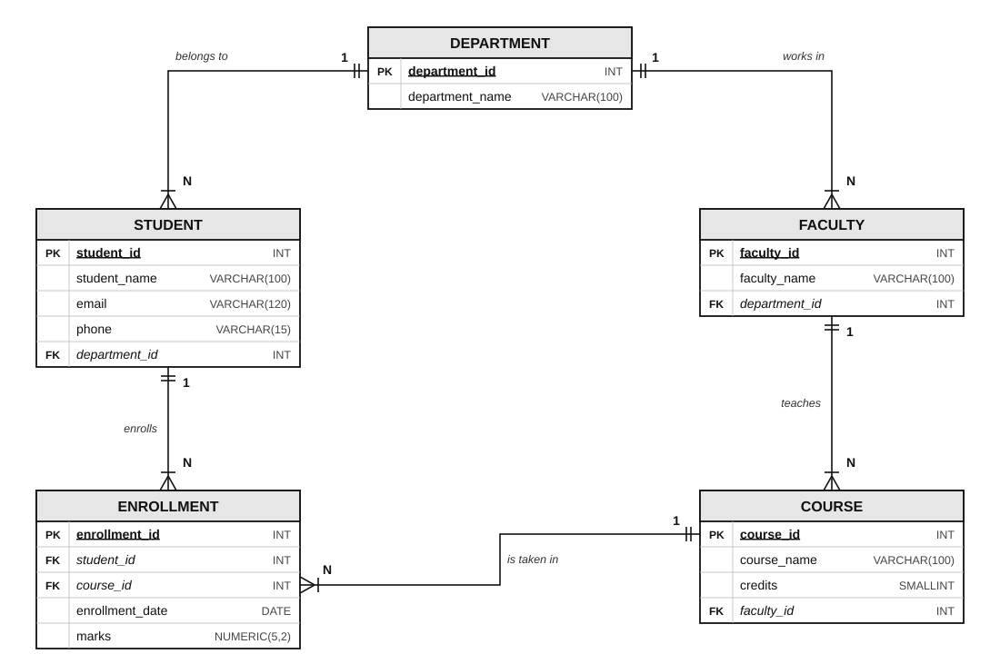
GENERATED ALWAYS AS IDENTITY, the SQL-standard replacement for SERIAL in PostgreSQL) generate key values automatically.The commands below create the database college_db and its five tables. Parent tables are created before the tables that reference them.
-- Create the database and connect to it
CREATE DATABASE college_db;
\c college_db
-- Parent table
CREATE TABLE department (
department_id INT GENERATED ALWAYS AS IDENTITY,
department_name VARCHAR(100) NOT NULL,
CONSTRAINT pk_department PRIMARY KEY (department_id),
CONSTRAINT uq_department_name UNIQUE (department_name)
);
-- Department 1 : N Student
CREATE TABLE student (
student_id INT GENERATED ALWAYS AS IDENTITY,
student_name VARCHAR(100) NOT NULL,
email VARCHAR(120) NOT NULL,
phone VARCHAR(15),
department_id INT NOT NULL,
CONSTRAINT pk_student PRIMARY KEY (student_id),
CONSTRAINT uq_student_email UNIQUE (email),
CONSTRAINT fk_student_department FOREIGN KEY (department_id)
REFERENCES department (department_id)
ON UPDATE CASCADE ON DELETE RESTRICT
);
-- Department 1 : N Faculty
CREATE TABLE faculty (
faculty_id INT GENERATED ALWAYS AS IDENTITY,
faculty_name VARCHAR(100) NOT NULL,
department_id INT NOT NULL,
CONSTRAINT pk_faculty PRIMARY KEY (faculty_id),
CONSTRAINT fk_faculty_department FOREIGN KEY (department_id)
REFERENCES department (department_id)
ON UPDATE CASCADE ON DELETE RESTRICT
);
-- Faculty 1 : N Course
CREATE TABLE course (
course_id INT GENERATED ALWAYS AS IDENTITY,
course_name VARCHAR(100) NOT NULL,
credits SMALLINT NOT NULL,
faculty_id INT NOT NULL,
CONSTRAINT pk_course PRIMARY KEY (course_id),
CONSTRAINT chk_course_credits CHECK (credits BETWEEN 1 AND 6),
CONSTRAINT fk_course_faculty FOREIGN KEY (faculty_id)
REFERENCES faculty (faculty_id)
ON UPDATE CASCADE ON DELETE RESTRICT
);
-- Student M : N Course (associative table)
CREATE TABLE enrollment (
enrollment_id INT GENERATED ALWAYS AS IDENTITY,
student_id INT NOT NULL,
course_id INT NOT NULL,
enrollment_date DATE NOT NULL DEFAULT CURRENT_DATE,
marks NUMERIC(5,2),
CONSTRAINT pk_enrollment PRIMARY KEY (enrollment_id),
CONSTRAINT uq_enrollment_student_course UNIQUE (student_id, course_id),
CONSTRAINT chk_enrollment_marks CHECK (marks BETWEEN 0 AND 100),
CONSTRAINT fk_enrollment_student FOREIGN KEY (student_id)
REFERENCES student (student_id)
ON UPDATE CASCADE ON DELETE CASCADE,
CONSTRAINT fk_enrollment_course FOREIGN KEY (course_id)
REFERENCES course (course_id)
ON UPDATE CASCADE ON DELETE CASCADE
);
psql 17.11 terminal sessions connected to a PostgreSQL 17.11 server (Linux, local socket, port 5433), executed on 06-10-2026. Every command visible was actually executed and every result shown was produced by PostgreSQL. The images are unedited apart from cropping empty space around the terminal text.
| No. | Commands executed | Purpose |
|---|---|---|
| 1 | psql --version; SHOW server_version; CREATE DATABASE college_db; \l college_db; \c college_db | Confirms PostgreSQL 17 and creates the database college_db. |
| 2 | CREATE TABLE department / student / faculty | Creates the parent table and the two tables that reference it. |
| 3 | CREATE TABLE course / enrollment; \dt | Creates the remaining tables and lists all five tables. |
| 4 | \d student; \d faculty | Shows columns, PK, UNIQUE and FK constraints of student and faculty. |
| 5 | \d course; \d enrollment | Shows columns, PK, UNIQUE, CHECK and FK constraints of course and enrollment. |
| 6 | SELECT … FROM information_schema.table_constraints … | Lists every primary key and foreign key with the referenced table. |
| 7 | INSERT INTO department / faculty / student / course / enrollment | Inserts sample rows to test the schema. |
| 8 | SELECT … FROM enrollment JOIN student JOIN course JOIN faculty | Joins the tables through their foreign keys. |
| 9 | Invalid INSERTs and DELETE | Shows PostgreSQL rejecting a missing FK value, marks > 100, a duplicate enrollment and deletion of a referenced department. |
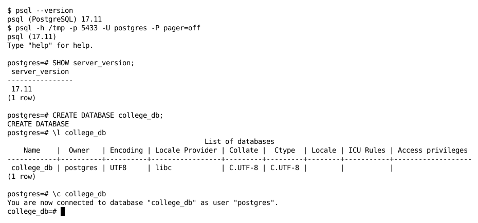
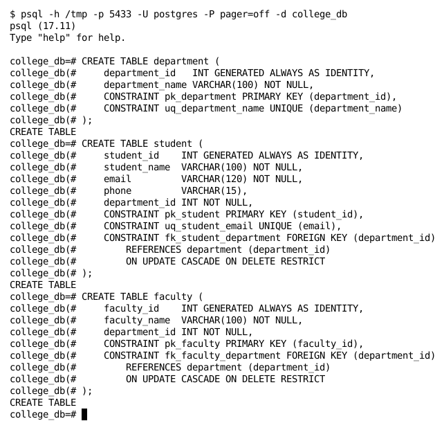
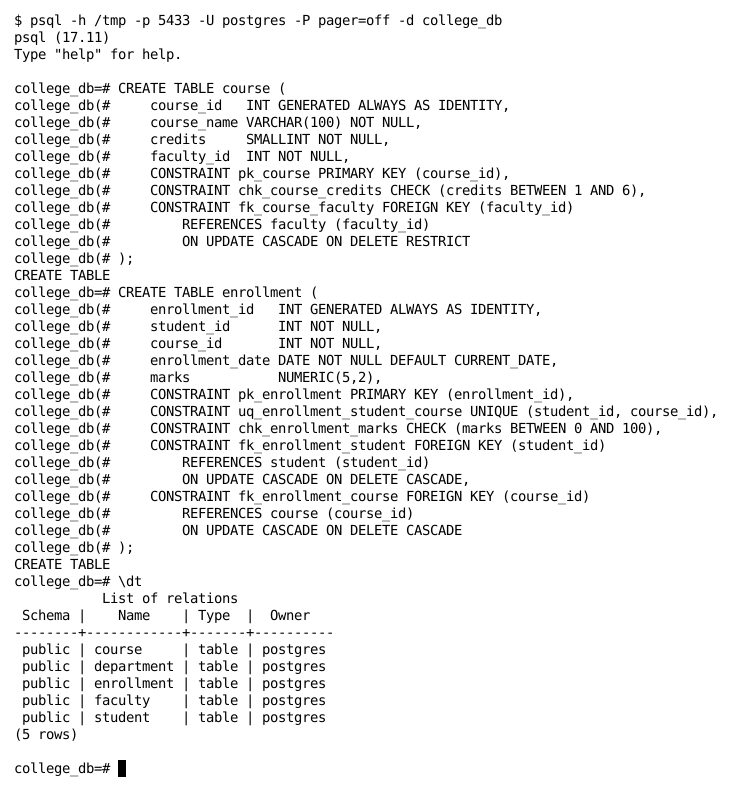
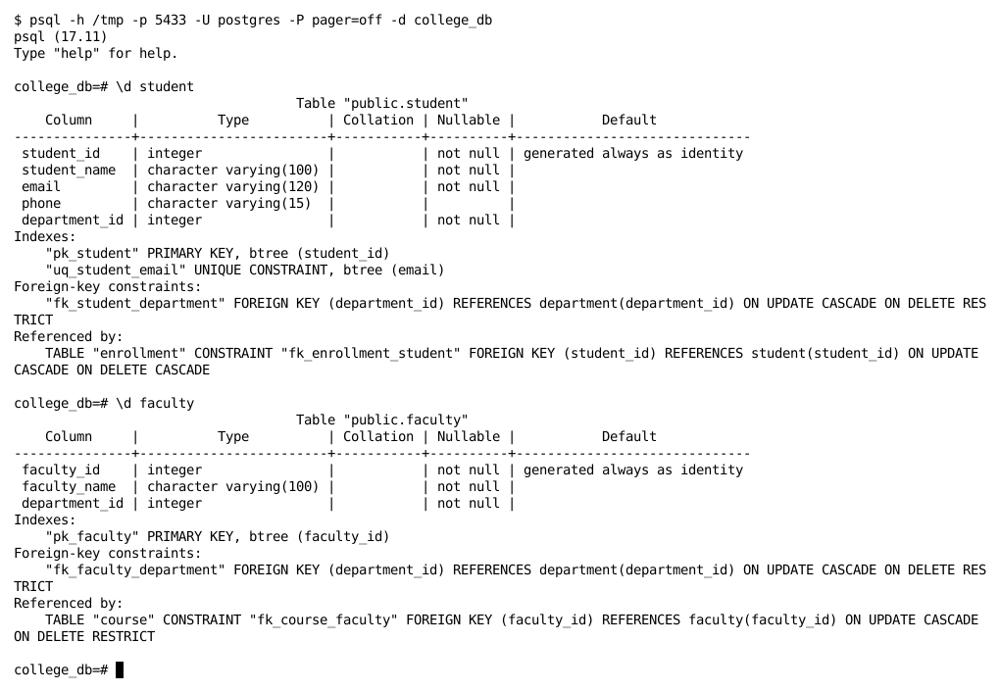
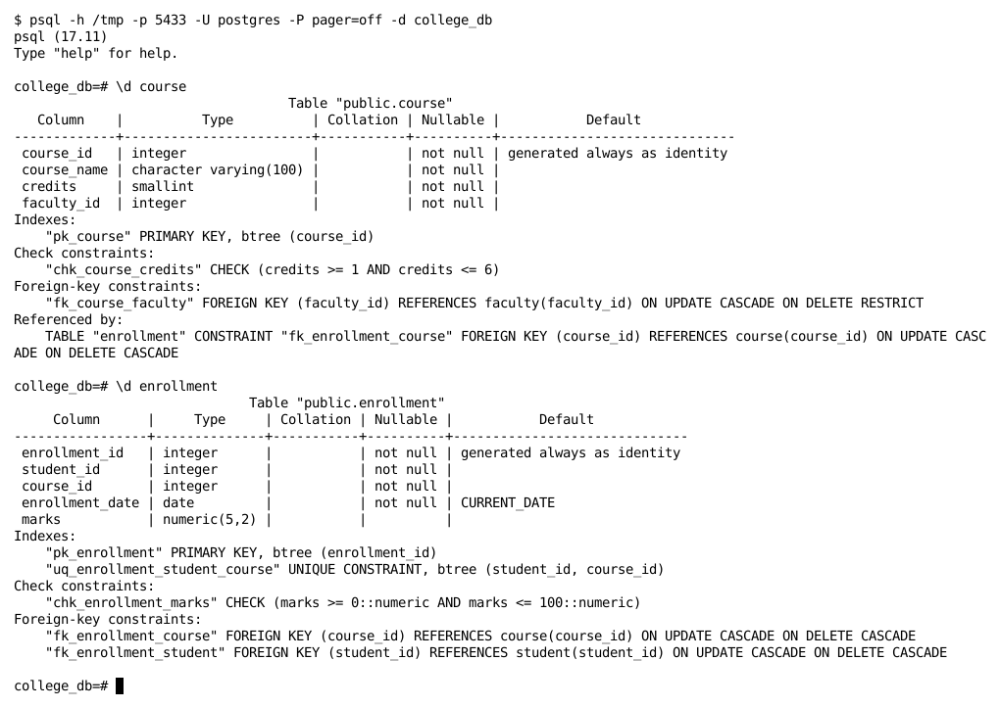
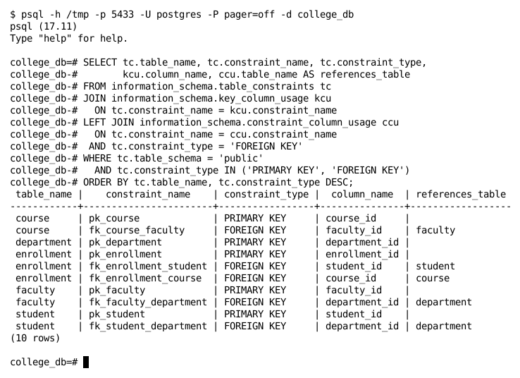
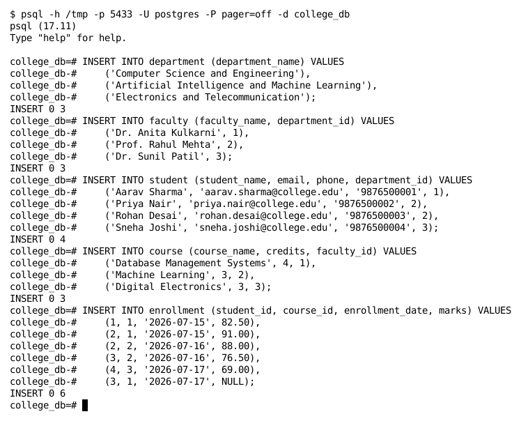
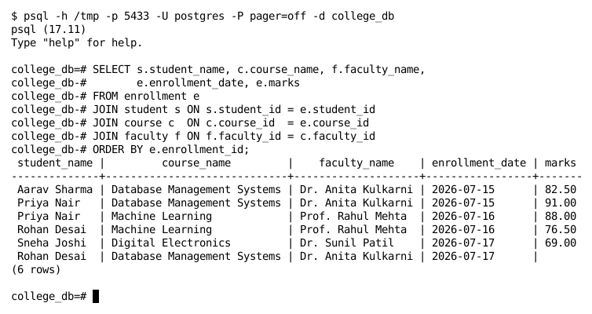
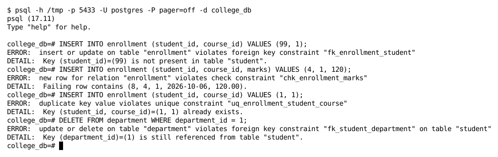
An ER model for the College Management System was designed with five entities – Department, Student, Faculty, Course and Enrollment – and four relationships: Department 1 : N Student, Department 1 : N Faculty, Faculty 1 : N Course, and Student M : N Course resolved through the Enrollment associative entity. The ER diagram was mapped into a relational schema using standard mapping rules, and the database college_db with all five tables was successfully created in PostgreSQL 17.
The execution output confirms that all primary key, foreign key, UNIQUE and CHECK constraints were created as designed, that data can be joined correctly across all five tables, and that PostgreSQL rejects invalid data (non-existent student, marks above 100, duplicate enrollment, deletion of a referenced department). Hence, the practical was performed successfully.